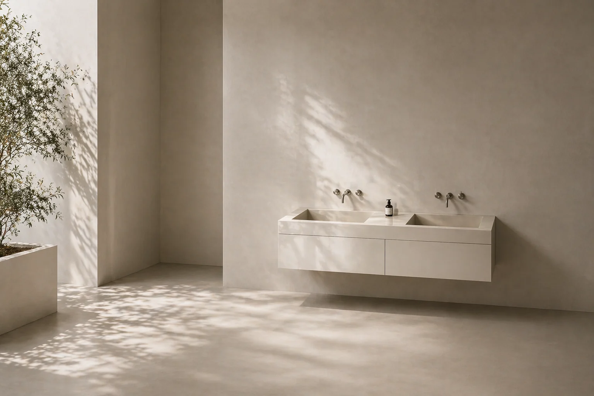

Porcelain Surfaces
Microcement Alternative in London
A premium microcement alternative London interiors can use for seamless-looking bathrooms, wet rooms and luxury bathroom surfaces with large-format porcelain.
Large porcelain slabs can create a quiet, continuous surface while keeping the durability and precision of porcelain.
Material Choice
Large-Format Porcelain as a Microcement Alternative
Large format porcelain London bathrooms can use as an alternative to microcement gives a clean, refined look with fewer grout lines, strong material consistency and a surface that is easier to maintain.
Where microcement creates a hand-applied cement finish, large porcelain slabs London interiors can use offer controlled colour, stable surface character and crisp architectural edges.
See our recent tiling and porcelain projects, contact the studio or Request a quote for a microcement alternative in London.
Bathrooms
Seamless-Looking Bathroom and Wet Room Surfaces
Large-format porcelain can create calm bathroom and wet room surfaces London homes can use for a minimal, continuous finish. The result feels refined without relying on a fully hand-applied surface system.
We plan slab size, tile setting-out, edge detail, drainage points and wall-to-floor transitions so the finished surface looks intentional and performs well.
Why Porcelain
Why Choose Porcelain Instead of Microcement?
Porcelain is chosen where a project needs a refined, low-maintenance finish with a controlled surface character and precise installation detail.
-
01
Durable, Waterproof and Low-Maintenance Finishes
Large-format porcelain is well suited to bathrooms and wet rooms when the substrate, waterproofing and installation details are planned correctly.
-
02
Luxury Bathroom Surfaces in London
Luxury bathroom surfaces London projects can build around, with porcelain finishes selected for tone, scale and long-term visual calm.
-
03
Large Slab Precision
Edges, corners, niches and vanity areas are handled with the same attention as the main field, helping large slabs feel architectural.
Planning
Request a Quote
If you are comparing microcement with large-format porcelain, share the room type, dimensions, photos and the finish direction. We can advise whether porcelain slabs are suitable for the bathroom, wet room or interior surface you are planning.
Next Step
Planning seamless-looking porcelain surfaces?
Explore recent projects or send the first details of your bathroom, wet room or surface project.